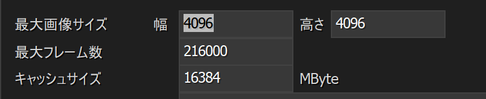

aviutlでメモリエラーが出たときの私の解決方法
2025年9月24日作成・2025年9月24日最終編集
結論: 最大画像サイズを小さくする。
無駄に大きい最大サイズはメモリエラーの原因になります。
環境
- Windows 11 Home (24H2)
- aviutl 1.10
- 拡張編集プラグイン 0.92
- L-SMASH Works r1245 by Mr-Ojii
- inputPipePlugin 2.0
- x264guiEx 4.05
- アルティメットプラグイン r93
- patch.aul r43_ss_73
- YMM4 4.45.4.2
症状
YMM4のために、サクッとaviutl環境を作りましたがexoファイルを読み込むと毎回メモリエラーが発生しました。
そこで、構成を変えたりしましたが解決しませんでした。
最終的に、最大画像サイズを小さくすることで解決しました。
まずaviutlを起動しファイル→環境設定→システムの設定→最大画像サイズを変更します。

私は最初16384x16384に設定していましたが、最終的に4096x4096に変更しました。どうやら5000x5000でも行けましたが、余裕を持って4096x4096にしました。